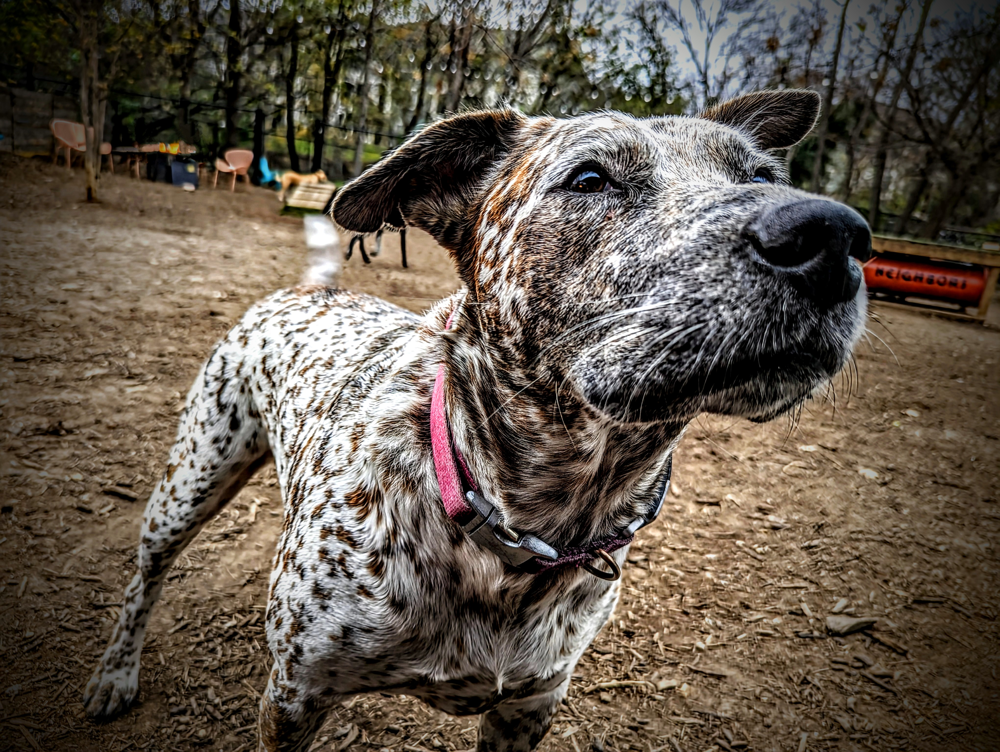

Where did we go?
A name, a setting, and the details that make each place memorable. The photo is the beginning of the story.
BIRDY & JORDAN / THE PHOTO JOURNAL
Meet Birdy: Jordan’s red heeler and brown Lab mix, favorite co-pilot, and the face behind this photo journal. Come along for the places we’ve been, the little moments worth keeping, and the next adventure.
Austin home base · A life in photos

MEET YOUR CO-PILOT
This one has a pink collar and a very good nose. Birdy’s journal brings together the places she’s been and the moments Jordan has photographed along the way.
Some photos are about a place. Others are about the company you keep. This journal makes room for both: the destination, the small discoveries, and Birdy right in the middle of it all.
Start with the photo deck ↓THE ORIGINAL CO-PILOT / PHOTO DECK
Swipe or scroll sideways through the photos. Use the arrow keys when the deck is focused.
Photo 1 of 1
Birdy’s photo journal. Open any photo for a full-size view.
BEHIND THE PHOTOS
A name, a setting, and the details that make each place memorable. The photo is the beginning of the story.
The little things deserve a place in the journal, too. A good stop, an unexpected discovery, or simply a photo worth keeping.
When there’s a useful detail to share, we’ll include it with the story: access, shade, water, and what made the outing work.
GET TO KNOW BIRDY
Birdy is Jordan’s female red heeler and brown Lab mix. She’s the co-pilot in these photos, and the reason this journal exists.
Photos from places Birdy has visited, the stories behind them, and practical notes for outings with a dog.
Sharing the journal is a lovely start. Jordan is also planning a personal GoFundMe for Birdy’s routine care and adventures. Fundraising details will appear here once the page is ready.
THE NEXT STEP
A shady walk, a welcoming stop, or a good story from your own dog’s adventures — we’d love to hear it.
Design review only
Live inquiries, appointments, purchases, and subscriptions are not enabled in this preview.
Explore the concept ↗